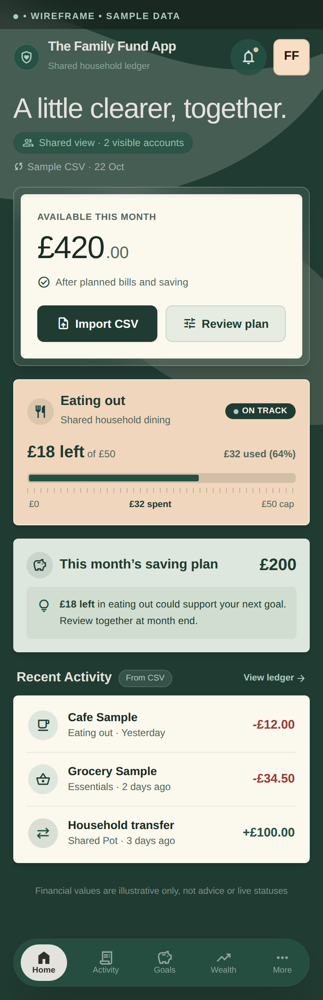
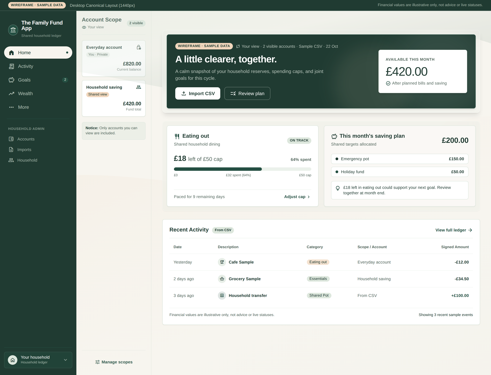
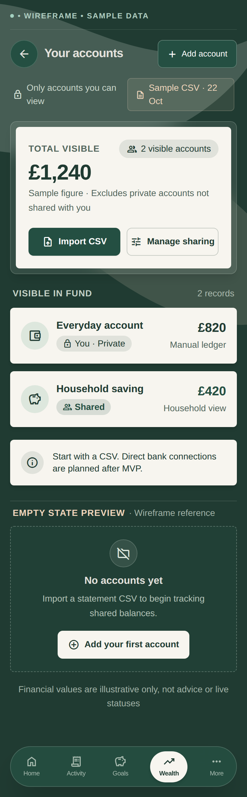
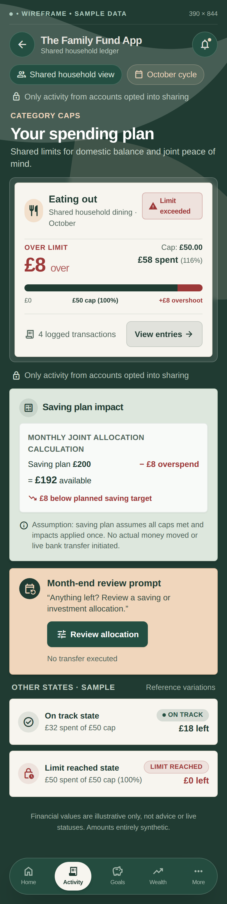
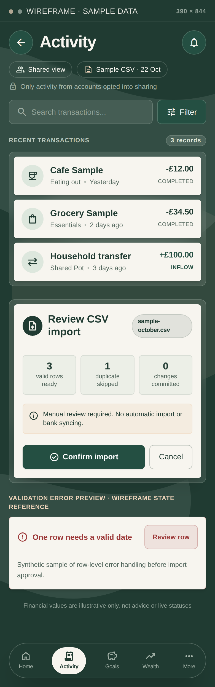
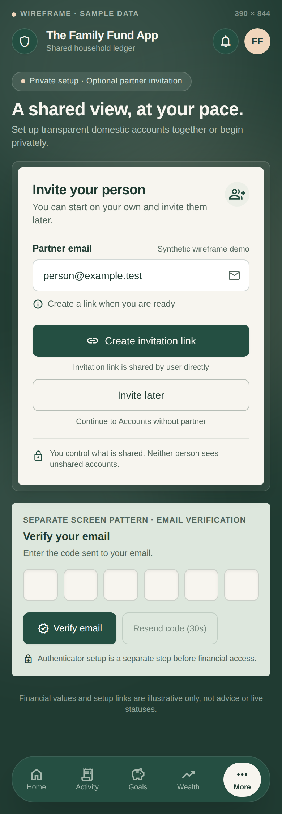

01 · Mobile
Home overview
A forest backdrop, layered framing and an opaque financial summary. Scope and CSV freshness stay visible beside the figures.

02 · Desktop
A purposeful workspace
Dark navigation, visible account scope and compact finance panels adapt the reference composition to wider screens.

03 · Mobile
Accounts and permissions
Ownership and sharing labels explain which accounts contribute to the visible total. Restricted accounts reveal no financial details.

04 · Mobile
Spending caps and saving impact
£58 spent against a £50 cap means £8 over. If the £200 saving plan assumes caps are met, the resulting amount is £192. No money moves.
A brief pulse may mark a new overspend. Reduced motion keeps a static red warning. Remaining allowance prompts a review at month end.

05 · Mobile
Activity and CSV review
Compact rows lead into an explicit review before an import is committed. Validation examples remain clearly separate.

06 · Mobile
Setup at your pace
Partner invitation is optional. Verification and MFA retain their existing security requirements within the same visual family.
